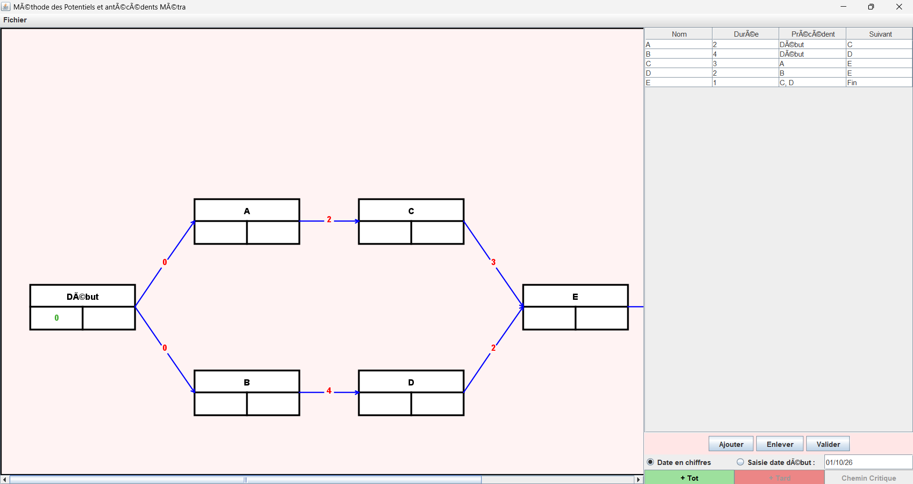
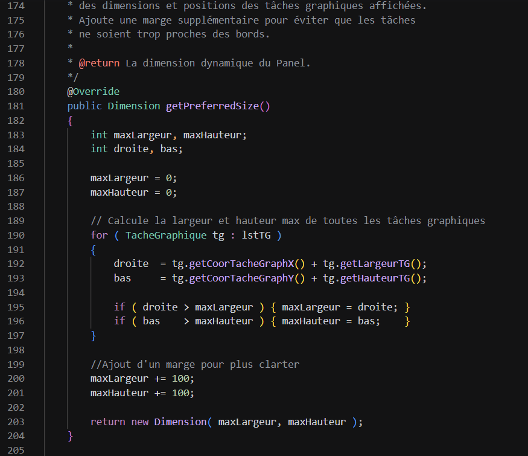
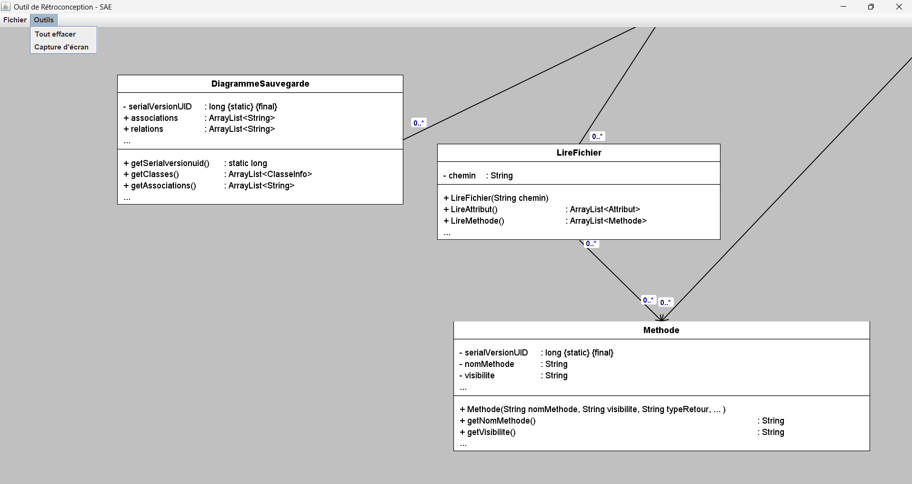
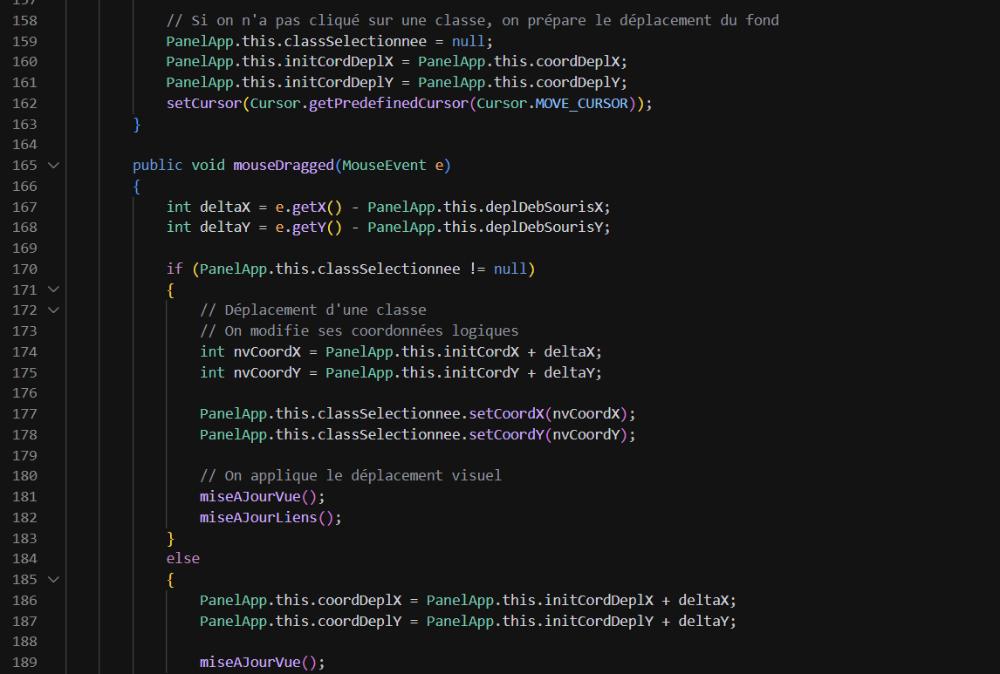

Les languages de développement d'application maitrisé
Durant mes 3 ans dans le BUT Informatique du Havre, j'ai appris plusieur language que j'appelle des languages de programmation, pour les séparer du language WEB.
Le language que je connais le mieux est le java, et nous avons fait un peut de Python en troisième année, et j'en ai fait en première et terminal.
Mes projets
Dans ma formation, il y a des projets de groupes appeler SAE.
Voici quelque projet ou j'ai réalisé
SAE 2.01 : Développement d'une application de gestion de projet
Dans ce projet réalisé en équipe de 4, l'objectif était de développer une application permettant de modéliser et gérer un graphe mpm (création, modification et suppression de tâches et de dépendances).
Mon rôle principal (100 % IHM) :
- Conception complète de l'Interface Homme-Machine (IHM).
- Organisation de la disposition des éléments graphiques pour rendre l'utilisation intuitive.
- Liaison entre les actions de l'utilisateur (boutons, formulaires) et le code métier en arrière-plan.
Ce projet m'a confirmé mon fort intérêt pour le développement d'interfaces et l'ergonomie logicielle.


SAE 3.01 : développement d'une application
Durant ce projet de groupes, nous étions dans une équipe de 6 membres, et nous devions faire de la rétroconception. En clair, l'application devait prendre un fichier java et créer des diagrammes de classe.

mon role a était de m'occuper de la lecture des méthodes et classe Java et de faire l'IHM (l'Interface Homme Machine)

Pour les projets fait en python il n'y en a pas encore, mais le premier language de programmationq que j'ai utiliser était python, avec la spécialité NSI au lycée. De plus nous fesont du Python a l'IUT dans une matière pour visualisé des algorythme mathématique
A propos
J'ai beaucoup parlé de IHM, mais je suis aussi capable de développer dans la partie métier.
De plus a l'IUT nous apprenons aussi la programmation orienté objet.